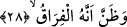

Yukardaki beyitte “temime/boncuk” kelimesi geçmektedir. Araplar çocuklarına -göz
değmesinden korktuklarından dolayı- bu boncukları takarlardı. Ancak bu âdet bâtıl bir
inanıştır. Çünkü Peygamber (s.a.) Efendimiz; “kim temime takarsa Allah’a ortak
koşmuş olur” [201] buyururlar. İşte yukardaki dizelerin yazarı olan şâir de bu mânâyı
kasdetmiştir.
Üzerinde durduğumuz ve tefsirini yaptığımız âyette yer alan “tedâvi edebilecek kim”
ifâdesinin biz ölmek üzere olan kişinin etrafını çevreleyen kimselerin sözü olduğunu
söyledik. Bunun yanında bu ifâde ölüm meleklerinin sözü de olabilir. Melekler
“sizlerden hanginiz; rahmet melekleri mi yoksa azap melekleri mi bu kişinin ruhunu
vücudundan alıp yukarılara götürecek?” diye birbirlerine sorarlar. Bu takdirde âyette
yer alan “raak” ifâdesi “er-Rukyy/yukarı yükselmek” kökünden türemiş olur. “Rahmet
melekleri” ifâdesi ilerde gelecek âyette “o tasdik etmedi ve namaz kılmadı” ile
çelişmez. Çünkü âyetteki zamir “insan cinsi”ne gider. Şu hâlde ölmek üzere olan
kimsenin mutlaka cehennemliklerden olması kesin olarak belirmez.
Kelbî der ki: “Kişi ölürken başucunda ölüm meleği ile birlikte yedi rahmet meleği ve
yedi azap meleği bulunur. Kulun ruhu köprücük kemiklerine dayandığında melekler
“bunun ruhunu göğe kim çıkaracak” diye birbirlerine bakarlar.” İşte âyette yer alan: “ve
kıyle men raâk” ifâdesinin anlamı budur.
İbn Abbas (r.a.) der ki: Melekler kâfire yaklaşmaktan hoşlanmazlar ve ölüm meleği
“bu kâfirin ruhunu göğe kim çıkaracak” diye sorar.
28. (Can çekişen) bunun gerçek bir ayrılış olduğunu anlar.
Ölüme yaklaşmış, can çekişmekte olan kişi ölüm meleğini gördüğü zaman başına
gelenin; sevimli dünyadan ve onun değersiz metâını kazanma uğrunda değerli ömrünü
harcadığı nimetlerinden ayrılış vaktinin geldiğini kesin olarak anlar.
Allah ölmek üzere olan kişinin bu anlayışı ve bilgisini “zann” kelimesi ile ifâde
ediyor. Bu ifâde anlamlıdır. Çünkü insanoğlunun ruhu bedeninde bulunduğu sürece insan
dâimâ hayatı arzular. İnsanoğlu bu dünya hayatını çok sever ve bu hayattan ümidini
kesmez. Dolayısıyla insanın kesin ölüm vakti geldiğine dâir bilgisi ve kanâati oluşmaz.
Tam tersine yaşamayı ummaya dâir zann-ı galibi olur.
İmam Fahreddin Razi der ki: Bu âyet-i kerîme bize gösteriyor ki ruh kendi başına
kâim bir cevherdir ve insan bedeninin ölümünden sonra kâimdir. Çünkü Allah Teâlâ bu
âyet-i kerîmede “ölüm” için “firak/ayrılık” ifâdesini kullanıyor. Firak, ancak beden
öldükten sonra ruhun baki kalmasıyla mümkündür. Çünkü firak ve visâl sıfattır. Sıfat
mevsufun varlığını gerektirir.
Şâfiî âlimlerinden el-Müzeni, İmam Şafii ile bir hâtırasını şöyle aktarıyor: İmam